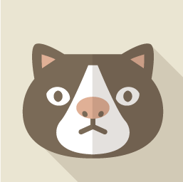

趙翌翔
(CHAO,I-HSIANG)

世界上從來沒有"最好的決定"，你只能在決定後做到最好。
關於我
趙翌翔
(CHAO,I-HSIANG)
世界上從來沒有"最好的決定"，你只能在決定後做到最好。
關於我
技能
程式能力
PYTHON
JAVA
HTML
CSS
大學經歷
校內經歷
我參加過學校裡的吉他社，在吉他社裡我參與了許多大大小小的表演和活動，不僅加深了我的見廣和視聞，同時也讓我能體驗上台表演的樂趣，起初我對於上態這件事會感到害怕，但經過多次上態的磨練，我業成功克服了這項短處。圖片是我參加期末成果發表的合照
我還參加過學校的南友會，這是一群從南部來中原讀書的學生組織的社團，他們常常會辦一些好玩的活動，像是圖中是我們到南部的小學帶小朋友們作活動時拍的，我們會帶小朋友體驗像營隊的生活，小朋友們既能學習也能交朋友。
這是我上學校的系選課程所拿到的證照，他主要是在教ERP系統，學期的最後會協助同學考去證照，這堂課對我來說收穫許多，學到了很多關於ERP的運用，這對於我未來的工作我想是很有幫助的。
校外經歷
我曾經到一家韓式料理店打工過，我要負責做餐點和服務客人，同時也要在後廚洗碗和環境清潔，我覺得是個滿不錯的體驗，可以看到和學到很多學校裡不會教的事物，同時也訓練了我對於人與人之間的交流應對技巧。
我也曾報名過國稅局的實習，我學到了許多稅務相關的知識，也提升了我的文書處裡和問題應變能力，公職對我來說也可能是未來的一條路，所以我認為趁早來體驗是個很棒的決定。

這是我目前在做的事情，我在安侯建業會計師事務所實習，我想提早認識一下事務所的生活，到目前為止我覺得我收穫很多，學到了很多實務相關的東西，這些是課本不會教的。